행사개요
행 사 명 : 박태준미래전략연구소 2014 미래전략 포럼
주 제 :
21세기 미래리더는 어떻게 배출되는가?'
- 국가 지도자(엘리트) 생성 메커니즘
- 미래 사회의 리더십
기 간 : 2014년 12월9일(화) 14:00~17:30
장 소 : 포스코 국제관 (포스텍 캠퍼스 내)
프로그램
포럼
시간
프로그램
14：00 ~ 15：30
개회사 : 최광웅 박태준미래전략연구소장
환영사 : 김용민 포스텍총장
축 사 : 송 복 연세대 명예교수
세션Ⅰ 주제 : 국가 지도자(엘리트) 생성 메커니즘
좌 장 : 조윤제 교수(서강대)
발 표 : 박길성 교수(고려대), 장덕진 교수(서울대),
최동주 교수(숙명여대)
토 론 : 김동헌 교수(고려대), 김왕배 교수(연세대)
15：30 ~ 15：45
휴 식
15：45 ~ 16：45
세션Ⅱ 주제 : 미래 사회의 리더십
좌 장 : 이진우 교수(포스텍)
발 표 : 류석진 교수(서강대), 조홍식 교수(숭실대)
토 론 : 전상인 교수(서울대), 백기복 교수(국민대)
논문 시상식
시간
프로그램
17：00 ~ 17：30
2014 미래전략연구 대학 (원)생 논문 공모 시상
우수작 4편
- 한국의 인재양성 메커니즘의 문제점과 새로운 방향 제시 : 선진국의 교육제도와 선출과정에 대한 비교분석 중심으로 (포항공대)
- 게임이론으로 바라본 투명사회의 리더십(서울대학교 대학원 의학과)
- 지향하는 미래사회와 그 미래사회를 견인할 창조리더에 관한 연구 : 창조리더 정조를 중심으로 (서울시립대 건국대)
- 정보화를 필두로 한 미래 한국사회의 모습과 이를 견인할 리더십 : 리더-리더, 팔로워-리더 관계를 중심으로 (포항공대)
연사
⊙ 개회사:
최광웅
소장 (포스텍 박태준미래전략연구소)
⊙ 축 사:
송복
명예교수 (연세대학교)
⊙ 발제자
SESSION I
- 좌 장.
조윤제
교수 서강대학교 국제대학원 교수
주영국 한국대사
대통령비서실 경제보좌관 역임
- 발제 I.
박길성
교수 : 고려대학교 대학원장
고려대학교 사회학과 교수
미국 유타주립대 겸임교수
미국 위스콘신대학교 사회학 박사
- 발제 II.
장덕진
교수 : 서울대학교 사회학과 교수
서울대학교 사회발전연구소 소장
한국사회학회 논문상
OECD World Forum Best Paper Award
- 발제 III.
최동주
교수 : 현재 숙명여대 대외협력처장 겸 글로벌서비스학부 교수
외교부/교육부/국방부/방사청 자문교수
Fullbright 재단 이사, 엘고어환경재단 이사
유네스코 석좌교수
⊙ 토론자:
- 토론.
김동헌
교수 : 고려대학교 경제학과 교수
고려대학교 경제학과 학과장
기획재정부 공공기관장 평가단 팀장
- 토론.
김왕배
박사 : 연세대학교 사회학과 교수
연세대학교 사회학과 학과장
시카고 대학 사회학과 조교수
SESSION II
- 좌 장.
이진우
교수: 포항공과대학교 인문사회학부 학부장
포항공과대학교 인문사회학부 석좌교수
계명대학교 총장
- 발제 I.
류석진
교수 : 서강대학교 정치외교학과 교수
서강대학교 사회과학연구소 소장
방송통신위원회 자체평가위원
국민훈장 동백장(국무조정실 정책평가위원)
- 발제 II.
조홍식
교수 : 숭실대학교 정치외교학과 부교수
숭실대학교 사회과학연구소 소장
경향신문 국제칼럼 필진
중앙선데이 시대공감 및 세상탐사 필진
⊙ 토론자:
- 토론.
전상인
교수 : 서울대학교 환경대학원 교수
통일연구원 연구위원
한국미래학회 회장
- 토론.
백기복
교수 : 국민대학교 경영학부 교수
한국윤리경영학회 회장
한미경영학자협의회 공동의장
참석자
⊙ 초청인사: 정준양 포스코 회장, 김용민 포스텍 총장, 윤동준 포스코 부사장, 송복 명예교수(연세대학교) 외
⊙ 포스텍 박태준미래전략연구소 위원 : 조윤제교수 외
⊙ 2014 대학(원)생 에세이 수상자외 다수
내용
Session I. 국가 지도자(엘리트) 생성 메커니즘
1. 국가 엘리트 생성 메커니즘: 행정 관료 엘리트
- 박길성 고려대학교
2. 정치 엘리트 생성 메커니즘의 국제비교
- 영국, 프랑스, 독일을 중심으로
- 장덕진 서울대 교수
3. 국가엘리트 생성 메커니즘 : 국가발전을 주도한 기업 엘리트 연구
- 최동주 숙명여대 교수
→ 영상보기:
Opening Session
→ 영상보기:
Session I. 국가 지도자(엘리트) 생성 메커니즘
Session II. 미래 사회의 리더십
1. 권력의 미래, 미래의 권력 그리고 리더십
- 류석진 서강대 교수
2. 미래 한국사회의 리더십
- 조홍식 숭실대 교수
☞ 주제발표자료는 미래전략 -
연구결과물
에서 확인하실 수 있습니다.
→ 영상보기:
Session II. 미래 사회의 리더십
* 2014 미래전략연구 대학(원)생 논문 공모 시상식
- 지향하는 미래사회와 그 미래사회를 견인할 창조리더에 관한 연구 : 창조리더 정조를 중심으로
홍현우(서울시립대), 신지수(건국대)
- 정보화를 필두로 한 미래 한국사회의 모습과 이를 견인할 리더십 : 리더-리더, 팔로워-리더 관계를 중심으로
김범준, 오진우, 이명호(포항공과대학교)
- 게임이론으로 바라본 투명사회의 리더십
임민혁(서울대학교 의학대학원)
- 한국의 인재양성 메커니즘의 문제점과 새로운 방향 제시 : 선진국의 교육제도와 선출과정에 대한 비교분석 중심으로
곽명훈, 정성주, 정유선(포항공과대학교)

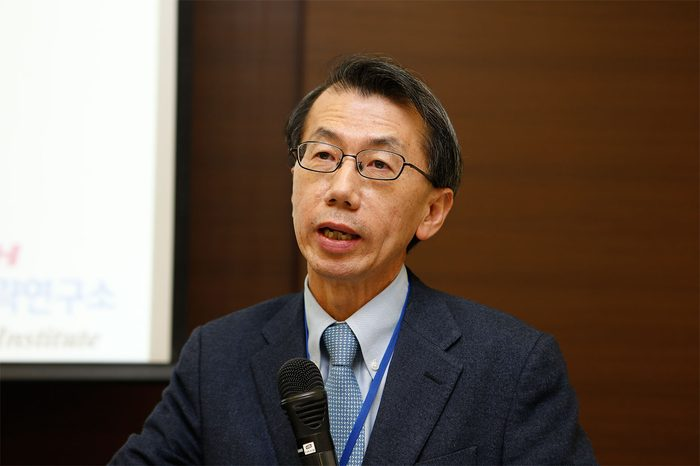
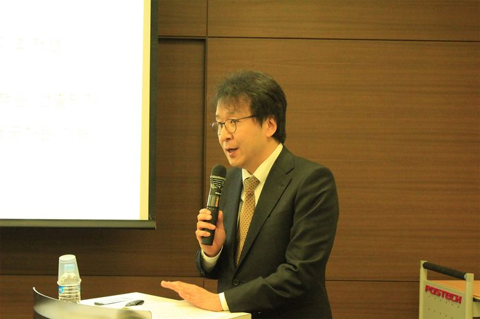
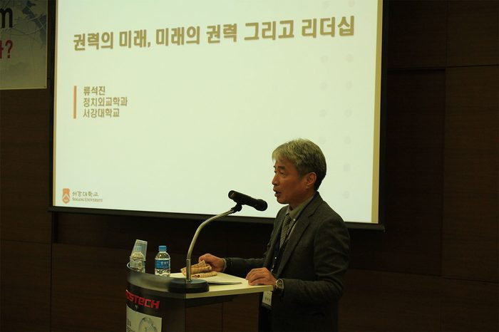
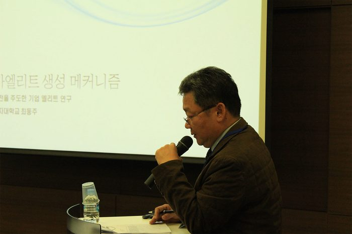
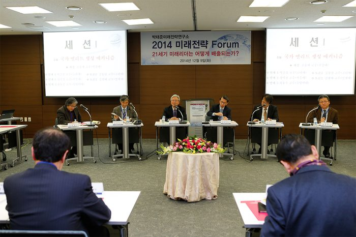
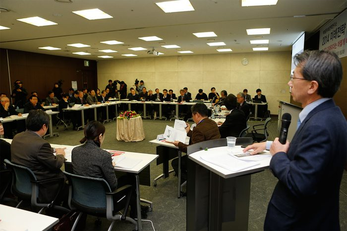
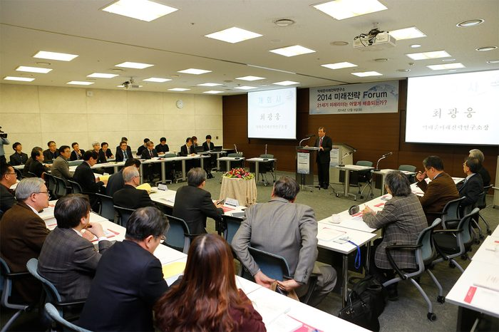
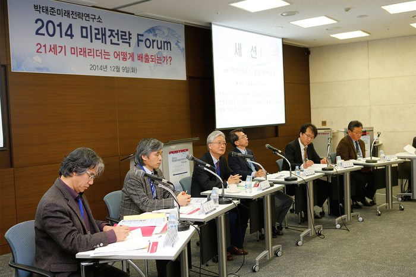

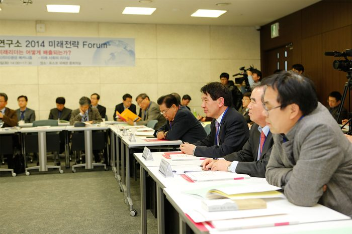
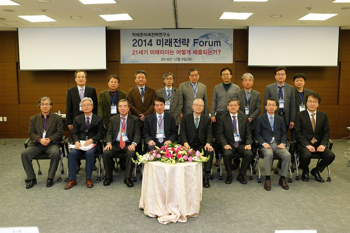
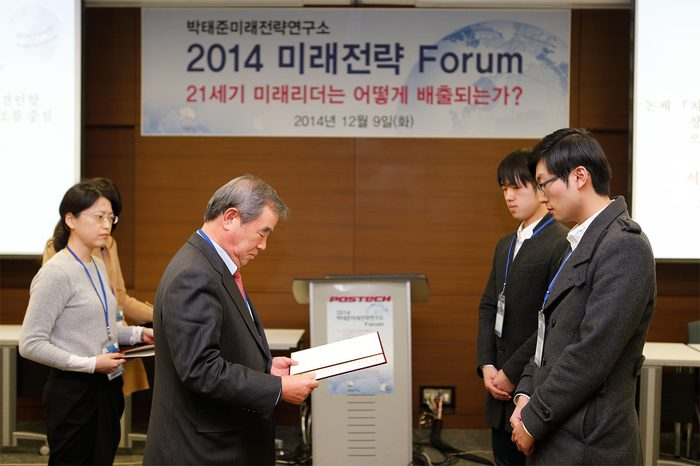
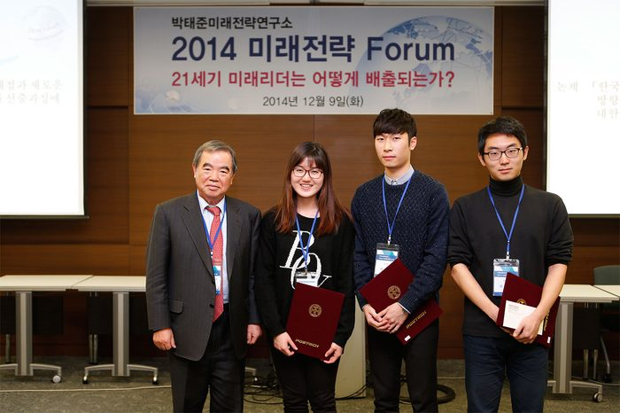
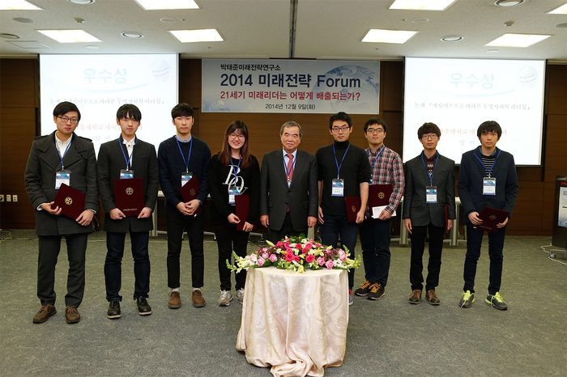